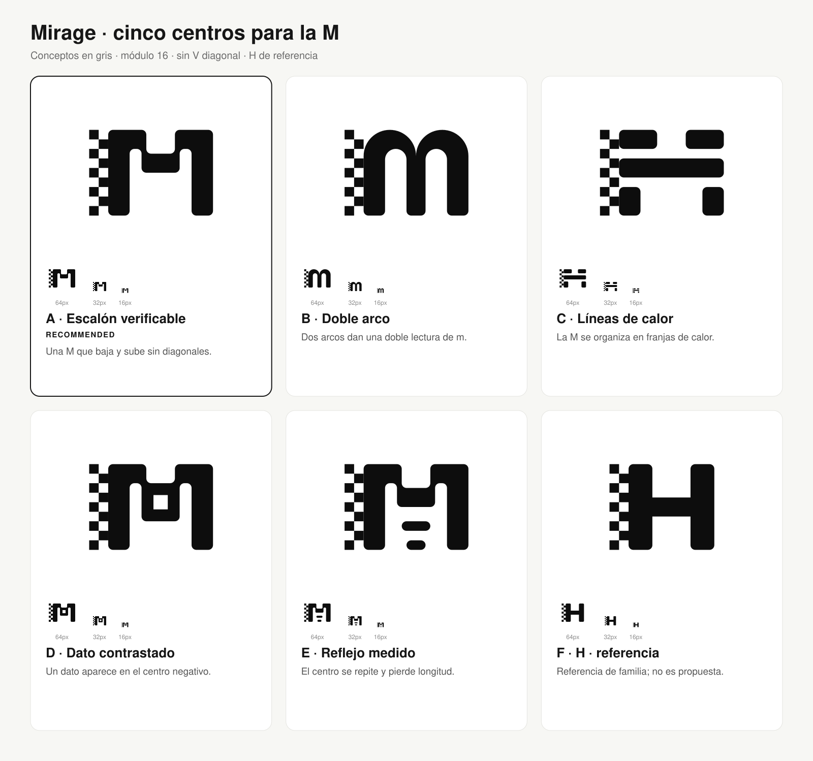

Mirage · cinco centros para la M
Recomendación conceptual: 1 · Escalón verificable. Inspección visual pendiente: no se obtuvo PNG en el entorno de ejecución.
Abrir tamaños, inversiones y comparación con H/FT · Leer resultado completo

Prueba invertida sobre carbón #1F2124

1 · Escalón verificable
2 · Doble arco
3 · Líneas de calor
4 · Dato contrastado
5 · Reflejo medido